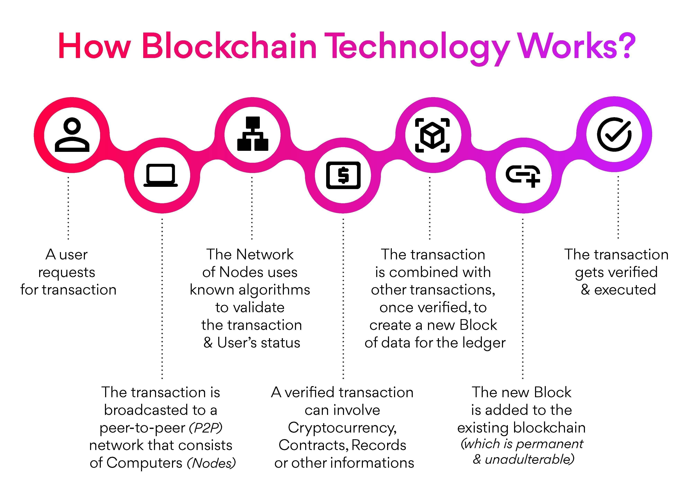

How Blockchain Works?
Blockchain operates through a series of interconnected steps that ensure transparency, security, and decentralization.
- User Request for Transactions: A user initiates a transaction request, such as a financial transfer or a contract agreement.
- Broadcasting the Transaction to a Peer-to-Peer Network: The transaction is broadcasted to a peer-to-peer network of computers known as nodes.
- Validation and Verification: The network of nodes employs cryptographic algorithms to validate the transaction and verify the user's status.
- Involving Cryptocurrency, Contracts, Records, and More: Verified transactions can involve various elements, such as cryptocurrency transfers, smart contracts, record-keeping, and more.
- Creating Blocks of Verified Transactions: Once verified, the transaction is combined with other transactions to create a block of data for the blockchain ledger.
- Adding New Blocks to the Existing Blockchain: The new block is added to the existing blockchain, forming an immutable and transparent record of transactions.
- Verification and Execution: Every transaction on the blockchain is verified and executed based on the pre-defined rules and protocols.